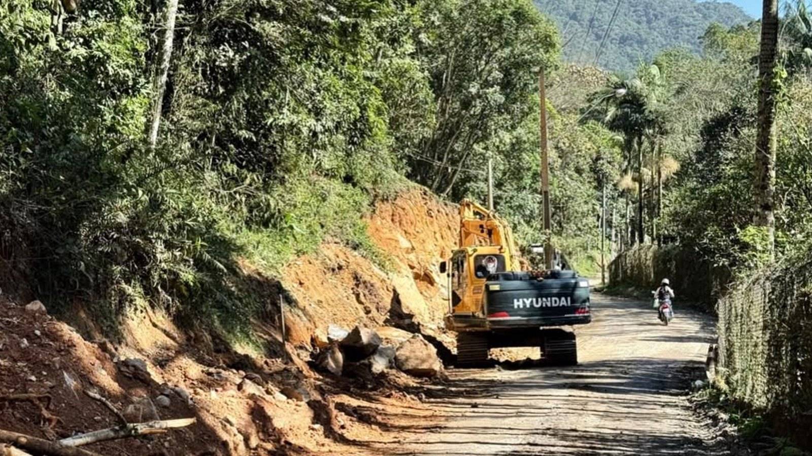
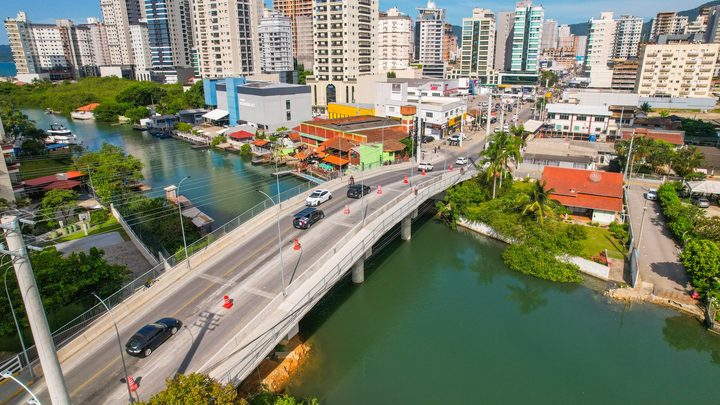

A alça nova da BR-101 em Itapema já tem asfalto, e a Prefeitura fala em reta final sem dar data de abertura
Outra obra viária da cidade anunciada sem prazo.
A Prefeitura de Itapema divulgou que cerca de 5 quilômetros da estrada do Alto Areal receberam alargamento, contenção das margens do rio com estacas e novos pontos de drenagem, com trechos que ganharam mais de três metros de largura. Em setembro de 2025, ao anunciar a detonação de rochas no mesmo lugar, a própria Prefeitura disse que a obra completa sairia em 2026 pelo programa estadual Estrada Boa Rural. O anúncio desta semana não cita o programa, não dá prazo de conclusão e não informa o custo.
Em 30 segundos · Modo de Leitura, formato original Santa Informa
A Prefeitura de Itapema anunciou obra na estrada do Alto Areal.
São cerca de 5 quilômetros de trajeto.
A via foi alargada, em alguns pontos mais de três metros.
As margens do rio ganharam contenção com estacas.
E entraram pontos novos de drenagem.
O anúncio saiu em 9 de setembro.
Um ano antes, no mesmo lugar, a Prefeitura detonou rochas.
Foi em 10 de setembro de 2025.
Na época ela disse que a obra completa sairia em 2026.
E que sairia pelo programa estadual Estrada Boa Rural.
O texto desta semana não cita o programa.
Não dá prazo de conclusão.
Não informa quanto custou.
Nem diz se o trecho vai receber asfalto.
Dinheiro do Estado entra por uma linha do orçamento.
Até junho, Itapema tinha recebido R$ 1,4 milhão ali.
De R$ 42,69 milhões previstos para o ano.
A estrada aparece nos anúncios da Prefeitura desde 2019.
InfraestruturaPublicada em Redação Santa Informa

A Prefeitura de Itapema publicou em 9 de setembro que a estrada do Alto Areal está mais larga. Pela Secretaria de Obras e Serviços Urbanos, cerca de 5 quilômetros do trajeto vêm recebendo alargamento, contenção das margens do rio com estacas e novos pontos de drenagem pluvial. Em alguns trechos o alargamento passou de três metros. É o mesmo lugar onde, em 10 de setembro de 2025, a Prefeitura detonou rochas para abrir espaço. Naquele anúncio, a administração disse que viria o projeto executivo e que a execução estava prevista para 2026, dentro do programa estadual Estrada Boa Rural. O texto desta semana não cita o programa, não traz prazo de conclusão e não informa o custo.
O relato oficial é de obra tocada por etapas, com solução diferente em cada trecho. Onde havia muita rocha, a equipe avançou sobre o maciço. Nas margens do rio entraram estacas de contenção, que seguram o barranco e permitem puxar a pista. Onde a água corria por cima do leito, abriram pontos novos de drenagem. O secretário de Obras e Serviços Urbanos, Jean Idimar, resumiu o objetivo como “ganhar largura na via e dar mais segurança para quem passa por aqui todos os dias”. O prefeito Alexandre Xepa disse que há lugar onde antes “um carro precisava parar para o outro conseguir passar”.
Em 10 de setembro de 2025, ao mostrar a detonação, o secretário de Governo e Infraestrutura, Marcelo Correia, foi direto: “Já estamos articulando com o Estado para garantir os recursos dentro do programa Estrada Boa Rural e, se tudo correr bem, a obra completa sai no ano que vem”. O ano que vem é este. A etapa que apareceu agora é de máquina da própria Secretaria de Obras, e o programa estadual não aparece em nenhuma linha do texto novo. A Prefeitura tampouco divulgou em que pé está o pedido de Itapema.
Dinheiro estadual para obra entra no orçamento municipal pela linha de transferências de capital dos estados. Na prestação de contas do primeiro semestre, Itapema previa R$ 42,69 milhões nessa linha para 2026 e tinha recebido R$ 1,4 milhão até 30 de junho, ou 3,3% do previsto. No mesmo relatório, a subfunção Infraestrutura Urbana tinha R$ 182,28 milhões autorizados e R$ 20,75 milhões liquidados, 11,39%. A Prefeitura não diz de qual dotação sai a obra do Alto Areal.
O Alto Areal é área rural e aparece nos anúncios da Prefeitura há pelo menos sete anos. Em março de 2019 a estrada ganhou ponte nova no lugar de uma de madeira. Em setembro de 2019 recebeu limpeza e material, e o secretário da época falava em “trechos muito íngremes no morro do Areal e uma estrada muito estreita”. Em agosto de 2025, o programa Avança Itapema registrou abertura de novas vias ali.
O resumo de 30 segundos está no topo e a versão completa é o texto acima. Aqui ficam as três leituras da casa sobre o mesmo assunto.
Clara, a otimista
Quem sobe o Alto Areal sabe o que é encontrar outro carro num trecho de três metros de largura, com barranco de um lado e rio do outro. Esse aperto diminuiu. Alargar a pista, segurar a margem com estaca e abrir dreno antes da chuva forte é serviço que aparece na vida de quem passa ali todo dia.
Tem outra coisa boa no meio. A Prefeitura publicou a foto do trecho em obra, com a máquina no lugar, e publicou também o anúncio do ano passado. Isso permite que qualquer morador compare o que foi dito com o que está feito, sem precisar pedir nada a ninguém. Nem toda cidade deixa a própria promessa acessível assim.
Seu Prudêncio, o criterioso
Merece atenção o que o anúncio não traz. Uma obra de 5 quilômetros tocada por etapas precisa de prazo, de custo e do número do processo que a paga, e nenhum dos três está no texto. Sem isso, quem mora no Alto Areal não tem como saber se o trecho da casa dele entra este ano ou no ano que vem.
Vale acompanhar o programa Estrada Boa Rural. Em setembro de 2025 a Prefeitura disse que a obra completa sairia por ele em 2026. O anúncio de agora fala só da Secretaria de Obras. Pode ser que o pedido esteja em análise, pode ser que a administração tenha resolvido começar com recurso próprio, e as duas explicações são razoáveis. O problema é que nenhuma delas foi dada. Uma sugestão útil: publicar uma linha dizendo em que pé está o pedido. Custa pouco e fecha a dúvida.
Dito isso, é preciso reconhecer o que foi bem feito. A ordem do serviço está certa: contenção da margem e drenagem antes de puxar a pista para o lado. Quem inverte essa ordem alarga hoje e perde o alargamento na primeira chuva de verão. Aqui a ordem foi respeitada, e isso é trabalho de quem entende do assunto.
Caco, o sarcástico
Detonaram rocha no Alto Areal em setembro de 2025. Um ano redondinho depois saiu o anúncio de que a pista alargou. A rocha, coitada, foi a parte rápida do processo.
A ponte de madeira foi trocada em 2019. A limpeza do morro foi em 2019 também. As vias novas, em 2025. Agora o alargamento. Se a Prefeitura mantiver esse ritmo de um anúncio por etapa, o asfalto sai mais ou menos quando meu neto tirar a carteira.
Mas olha, reclamar de estrada que alargou é ingratidão. Antes dois carros paravam para se encarar no meio do morro. Agora passam os dois juntos, e ainda sobra espaço para a moto. Demorou, e mesmo assim é bem melhor que a outra opção, que é continuar dando marcha a ré de olho no retrovisor.
Fontes: o alargamento de mais de três metros, os cerca de 5 quilômetros em obra, a contenção com estacas, a drenagem nova e as falas do prefeito Alexandre Xepa e do secretário Jean Idimar estão em Obras melhoram acesso e segurança viária no Alto Areal, publicada pela Prefeitura de Itapema em 9 de setembro de 2026. A detonação de rochas, a previsão de projeto executivo, a menção ao programa estadual Estrada Boa Rural e a fala do secretário Marcelo Correia estão em Detonação de rochas dá início à ampliação viária no Alto Areal, da mesma Prefeitura, de 10 de setembro de 2025. A abertura de novas vias no Alto Areal pelo programa Avança Itapema está em Avança Itapema segue com obras em diferentes bairros da cidade, de 19 de agosto de 2025. A ponte nova no lugar da de madeira está em Estrada do Bairro Alto Areal ganha nova ponte, de 21 de março de 2019, e a limpeza com colocação de material, com a fala sobre os trechos íngremes do morro, em Secretaria de Obras realiza melhorias na região do Alto Areal, de 12 de setembro de 2019. Os R$ 42,69 milhões previstos em transferências de capital dos estados, o R$ 1,4 milhão recebido até 30 de junho, os R$ 182,28 milhões autorizados e os R$ 20,75 milhões liquidados na subfunção Infraestrutura Urbana saem do Relatório Resumido da Execução Orçamentária do primeiro semestre de 2026, que abrimos na nossa matéria de 11 de setembro sobre o orçamento de Itapema. A conta de 3,3% e a comparação entre o anúncio de 2025 e o de 2026 são trabalho nosso, feito sobre as páginas da própria Prefeitura, todas abertas e conferidas uma a uma.
Outra obra viária da cidade anunciada sem prazo.

Itapema · Poder PúblicoDe onde saem os números de orçamento desta matéria.
 Itapema · Poder Público
Itapema · Poder PúblicoO que a cidade planeja gastar no ano que vem.